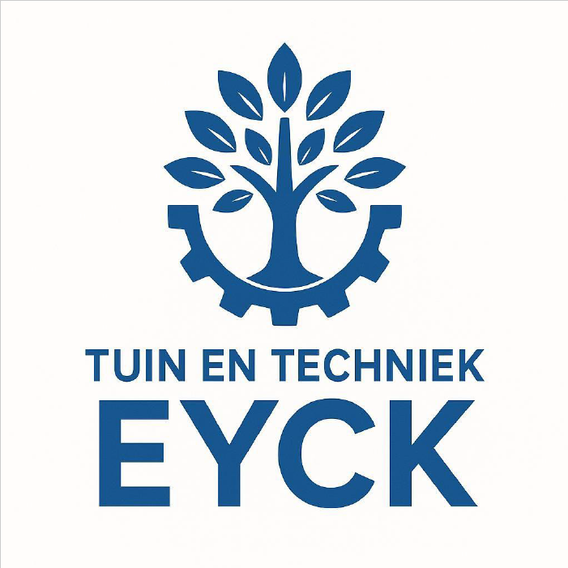

Bestratingen
Van tuinpaden tot complete bestrating rondom woning, oprit of buitenruimte.

Tuin en Techniek Eyck helpt particulieren bij het realiseren en renoveren van tuinen.
Iedere tuin is anders. Daarom kijken wij graag samen met u ter plaatse naar de mogelijkheden om tot een passende oplossing te komen.
Wij denken praktisch mee en werken met aandacht voor kwaliteit, afwerking en duurzaamheid. De uitvoering wordt afgestemd op de situatie ter plaatse.
Van tuinpaden tot complete bestrating rondom woning, oprit of buitenruimte.
Aanleg van terrassen die passen bij de woning, tuin en gewenste uitstraling.
Plaatsing van houten, betonnen en composiet schuttingen voor privacy en een verzorgde uitstraling.
Niet meer tevreden met uw tuin? Tuin en Techniek Eyck denkt graag met u mee over een passende oplossing. Mijn naam is Toine Eyck. In de afgelopen jaren heb ik veel ervaring opgedaan in de aanleg en het onderhoud van tuinen, waarbij ik heb gewerkt met uiteenlopende materialen, technieken en machines. In november 2025 heb ik de stap gezet om mijn eigen onderneming te starten. Met Tuin en Techniek Eyck zet ik mijn vakkennis, enthousiasme en passie voor het buitenwerk in om uw tuinwensen werkelijkheid te maken. Of het nu gaat om een complete tuinaanleg, een terras, schutting of een andere tuinoplossing, ik werk graag samen met u aan een tuin die aansluit bij uw wensen.
Benieuwd wat ik voor u kan betekenen? Neem gerust contact op, dan bespreken we samen uw wensen en de mogelijkheden voor uw tuin.
E-mail: tuinentechniekeyck@gmail.com
Telefoon: 06-83187642
WhatsApp: Stuur direct een bericht
KVK: 98777165
Heeft u plannen voor uw tuin aan te pakken? Neem vrijblijvend contact op voor een kennismaking of offerte.